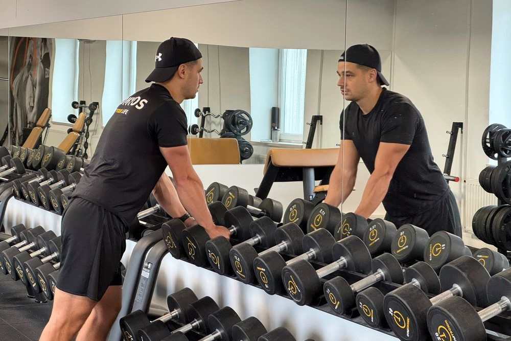

ZD
Zsédely Dávid
Személyi edző · Győr
Gymtronic, Győr
Kezdőknek is
Nem kell formában lenned
ahhoz, hogy
elkezdd.
★★★★★
50+ elégedett ügyfél
· 8+ év tapasztalat Győrben
✓
Az első alkalom felmérés — nem a súlyokról szól
✓
Személyre szabott terv és technikai korrekció
Ingyenes konzultáció
→
zsedelydavid.hu
Írj üzenetben is